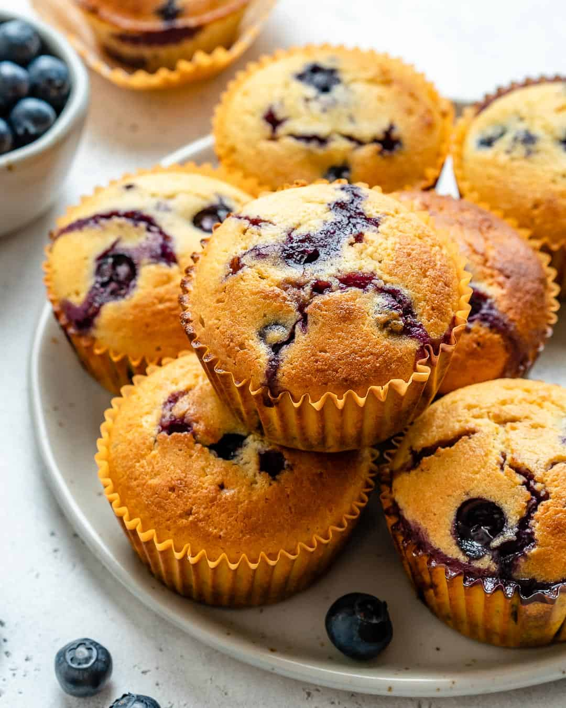

Lemon Blueberry Muffins Recipe

Description
Prep:
15 mins
Cook:
30 mins
Additional:
10 mins
Total:
55 mins
Servings:
16
Yield:
16 muffins
Nutrition Info
Ingredients
- 3 ¼ cups all-purpose flour
- 4 teaspoons baking powder
- 1 teaspoon baking soda
- ½ teaspoon salt
- 1 ⅓ cups white sugar
- 1 ¼ cups milk
- 1 cup sour cream
- ½ cup melted butter
- 2 large eggs
- 1 tablespoon lemon zest
- 1 ½ cups frozen blueberries
Steps
- Preheat the oven to 350 degrees F (175 degrees C).
Line 16 muffin cups with paper liners.
- Sift flour, baking powder, baking soda,
and salt together in a bowl.
- Combine sugar, milk, sour cream, butter,
eggs, and lemon zest in a large bowl.
Beat with an electric mixer on low speed
until blended. Fold in the flour mixture
until batter is just moistened. Fold in
blueberries; avoid overmixing because batter will turn purple.
- Fill muffin cups 3/4 full of batter.
- Bake in the preheated oven until golden brown,
30 to 35 minutes. Let cool for 10 minutes.